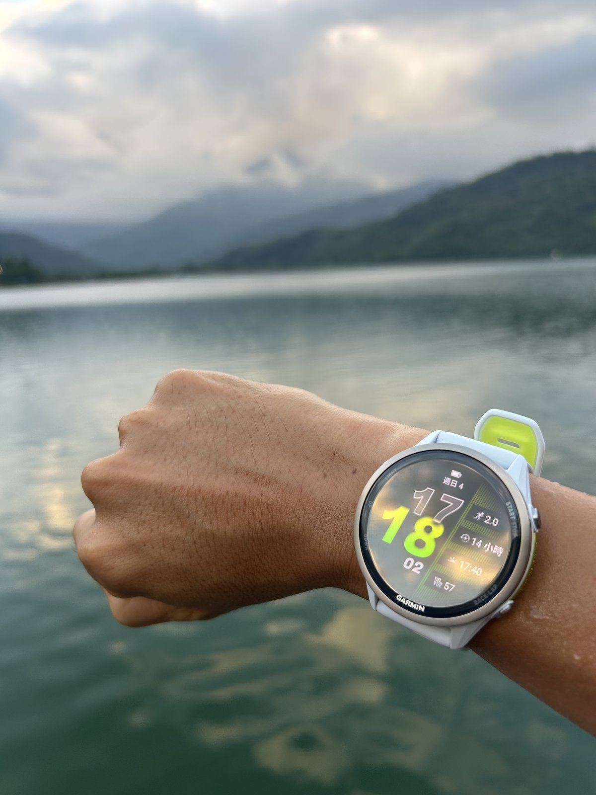

從 Garmin Forerunner 945 到 970：七年後換跑錶的心得

我的 Garmin Forerunner 945 戴了七年。換錶前我把這七年戴著它的跑步紀錄加總了一次：從二〇一九年拿到錶後的第一次跑步，到二〇二六年九月七日晚上它壞掉前記下的最後一筆，總共 3,181 筆跑步紀錄，陪我跑了 11,063 公里。
前幾天我換上 Forerunner 970，第一次訓練就到鯉魚潭跑步和游泳。到目前為止跑了三次、游了兩次。才五次訓練，還沒有完整使用所有功能，但有幾個差異在第一次下水、第一次開跑的當下就非常明顯，值得先記錄下來。
這兩支錶相隔六年。Forerunner 945 在二〇一九年四月底上市，當時是 Garmin 跑步與三鐵的旗艦錶；Forerunner 970 在二〇二五年五月上市。中間隔了 955 與 965 兩代。
硬體上最直觀的差別：
▹ 光學心率：兩支錶都是 Garmin Elevate 腕式心率感測器，970 多了心電圖（ECG）與皮膚溫度感測。
▹ 衛星定位：945 只能單頻，GPS 搭配 GLONASS 或 Galileo 二選一；970 是多頻多系統，並有 SatIQ 自動切換。我都在同一個地方跑，明顯定位快很多。
▹ 機身：厚度從 13.7 mm 降到 12.9 mm，重量從 50 g 增加到 56 g；儲存空間從 16 GB 變成 32 GB。
▹ 新增硬體：LED 手電筒（白光與紅光）、喇叭與麥克風。
▹ 螢幕：945 是 1.2 吋、240 × 240 的 MIP 反射式螢幕，只能靠五顆實體按鍵操作；970 是 1.4 吋、454 × 454 的 AMOLED 觸控螢幕，保留按鍵，加上藍寶石玻璃。
介面上，螢幕變大後，資料頁變得「一眼就能讀」。945 的螢幕在太陽下清楚、耗電低，但解析度與對比都受限，多欄位的資料頁要瞇著眼看，地圖幾乎只能當示意。970 的 AMOLED 螢幕亮度高、對比強，同一頁放四到六個欄位依然清楚，地圖在跑步中也能看懂路線，對我出差時在城市裡跑步移動應該很有幫助，就不用再拿著手機跑了。
操作上，945 只有按鍵，所有設定都得一層一層按進去；970 多了觸控與常用運動模式的捷徑，日常翻頁、看圖表都可以直接用滑的。運動中觸控可以鎖住，按鍵的操作邏輯和 945 一脈相承，不需要重新學，很快就上手。
另一個明顯的差別是「總覽頁面」：970 把睡眠、HRV、訓練完備程度、訓練狀態、跑步耐受度整理成一組組小卡片，早上起來的早安晨報一次把前晚睡眠、恢復狀態與今天的課表攤開。我現在連續幾天都會打開來看。
如果用 970 跑課表，跑完後還會多一個「訓練執行度分數」，也就是這次課表的完成度。手錶會自動拿實際跑出來的數據去比對教練開的課表，算出一個百分比。我覺得這個功能很棒，跑完當下就知道自己跟課表設定強度差多少、完成度多少。
依手冊的說明，主項的比重最高，看的是實際強度有沒有落在目標區間、每個步驟有沒有跑完；熱身和恢復段的影響比較小，緩和段完全不計分。只要課表有設定心率、配速、速度或功率的目標，跑完就會出現這個分數。昨天用它來跑全馬訓練營裡五區間歇的課表，拿到 80%！這是我們十年前 Garmin PB 班使用佳速度時就有的「課表完成率」功能，現在直接做在跑錶上，感覺好棒！
游泳心率是我換錶後感受最強烈的一項：從完全沒有數據，到每一趟與休息時間都看得一清二楚。
依台灣官網與手冊的說明，945 游泳時的心率要靠 HRM-Tri 或 HRM-Swim 胸帶來記錄。我以前游泳都沒有戴心率胸帶，所以游的時候手錶上看不到心率，七年來在泳池的訓練也沒有存到任何一筆心率數據。更早之前有戴心率胸帶，但一定要穿三鐵衣才能游，不然跳水或蹬牆時就會被沖掉。
970 的畫面完全不同，這讓我這個游泳愛好者非常喜歡！
錶上的每一趟都有自己的分段心率，休息時心率降下來的過程清楚可見，主項與休息之間的落差一目了然。更讓我意外的是，手臂在水中划動時的心率變動也抓得到，停在岸邊休息時就算手錶在水中也能看到心率在變化。能在水裡做到這種程度，是了不起的技術。
當然，所有腕式光學心率在水中都有先天限制，錶帶一鬆、水從感測器和皮膚之間流過，數據就會受影響；要做到胸帶等級的精準，還是得搭配 HRM-Pro 系列胸帶。但對日常的游泳課表來說，970 的腕式心率已經可以當作判斷強度的依據，而且不必多戴一條胸帶，這是我用 945 的七年裡沒有過的體驗。
在陸上，國外評測拿 970 與 Polar H10 胸帶對照，跑道間歇課全程幾乎都在 1 到 2 bpm 以內，平均心率只差 1 bpm（Android Central, 2025）。以腕式光學感測器來說，這個數據的信度已經接近胸帶了！
游完泳還看到一個蠻棒的小設計。兩次下水，按下儲存游泳紀錄的當下，970 都會自動啟動排水功能：喇叭播放一段聲音，把喇叭與麥克風孔裡的水排出來。
970 多了喇叭與麥克風，機身上也就多了會進水的孔。依原廠手冊的說明，游泳或泡澡後殘留在孔裡的水會讓手錶的音量暫時變小，雖然不會傷到手錶，但可能要長達 24 小時才會蒸發；排水功能就是用聲音把水排掉，平常也可以從快捷目錄手動啟動。945 沒有喇叭，用不到這個功能，但看到新錶把新硬體帶來的小麻煩也一起處理掉，覺得很貼心。
📚 參考資料
▹ Android Central. (2025, June 29). Garmin Forerunner 970 fitness test: GPS, heart rate, steps, and running tolerance. 連結
▹ Garmin. (2019). Forerunner 945 使用者手冊. 連結
▹ Garmin. (2025a). Forerunner 970 watch owner's manual: Running tolerance. 連結
▹ Garmin. (2025b). Forerunner 970 使用者手冊. 連結
▹ Maker, R. (2025a, May 15). Garmin Forerunner 970 hands-on: Everything you need to know! DC Rainmaker. 連結
▹ Maker, R. (2025b, June). Garmin Forerunner 970 in-depth review: Brilliance at a cost? DC Rainmaker. 連結
▹ the5krunner. (2025a, May 20). Running Tolerance: All you need to know about Garmin's new injury avoidance metric. 連結
▹ the5krunner. (2025b, May 19). Running Economy: All you need to know about Garmin's new running efficiency metric. 連結
▹ the5krunner. (2025c). Garmin Forerunner 970 specs, features and battery life. 連結